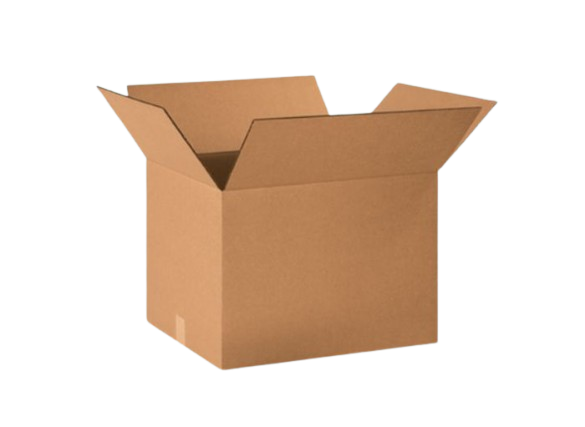
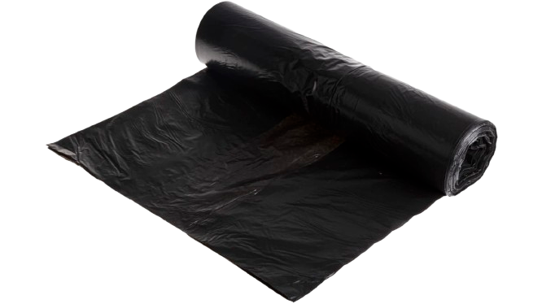
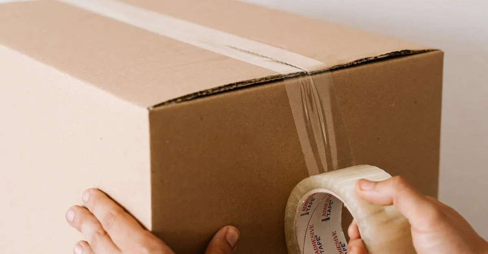
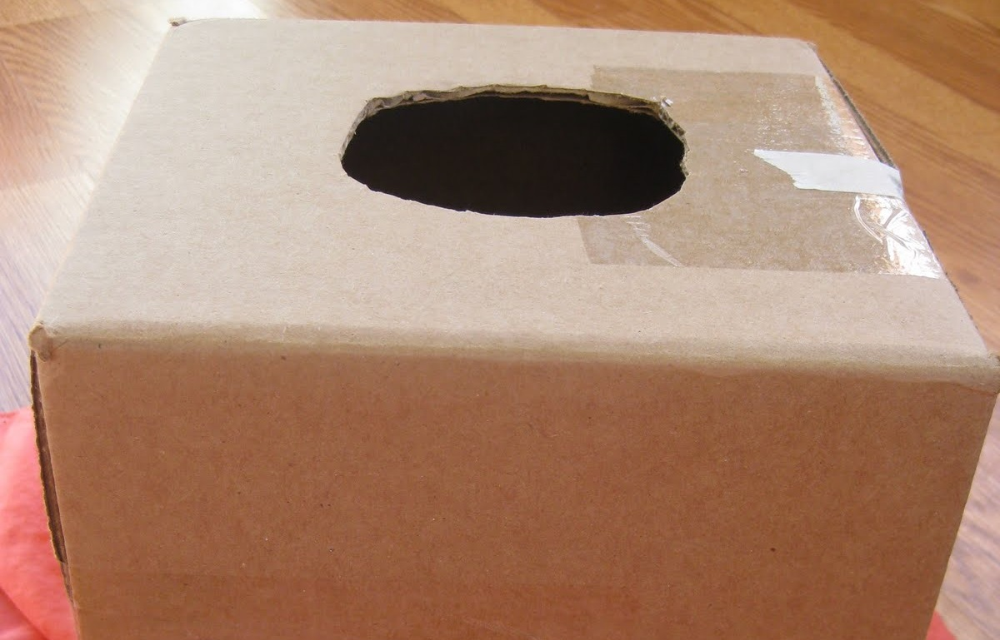
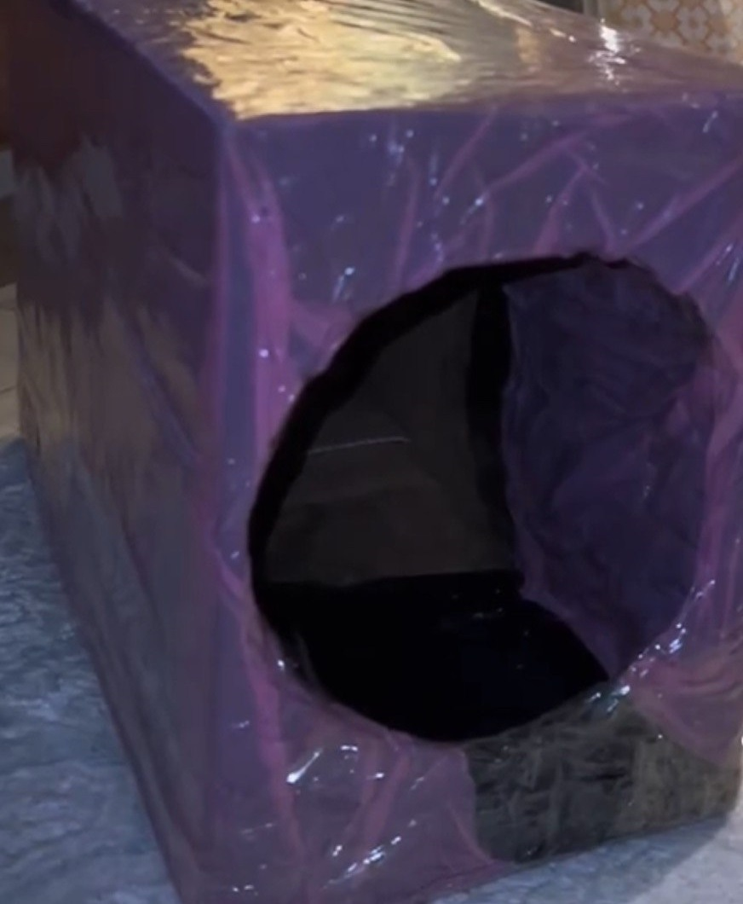
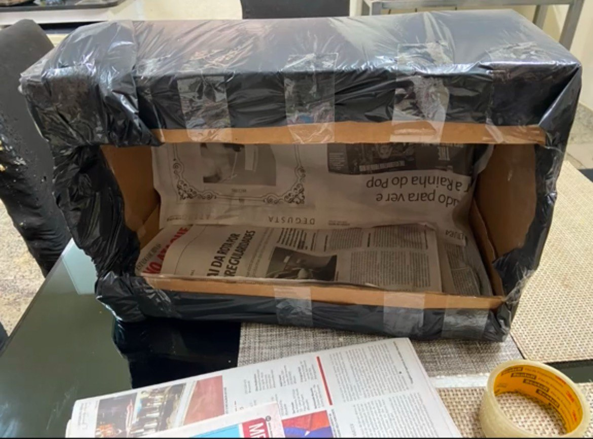
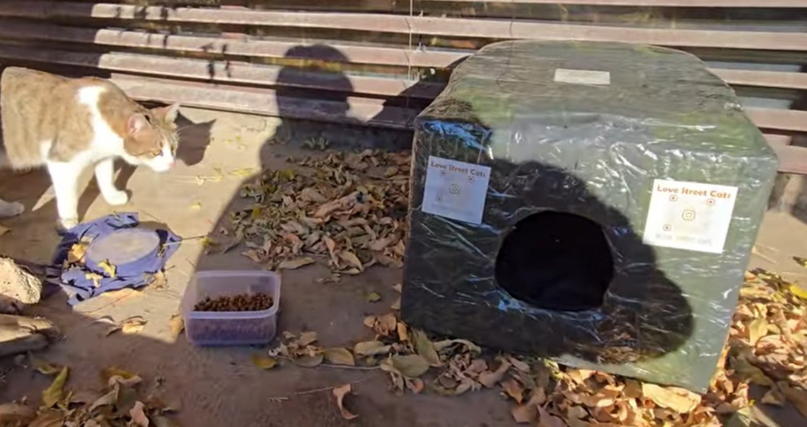

materials

clean wide cardboard box

Scissors or a sharp knife

tape

plastic trashbag

Tape a cardboard box securely on all sides to close it.

Cut a large hole or square on one side of the box to serve as the entrance.

Cut open a plastic trash bag into a large sheet. Wrap the box completely and secure it with tape, tucking the edges neatly inside the doorway. This will help protect the shelter from rain.

Place a soft cloth, pillow, or news paper inside for warmth and comfort.

Place the shelter in a quiet, hidden spot, such as behind a tree, in a corner, or any place away from dogs and heavy human activity